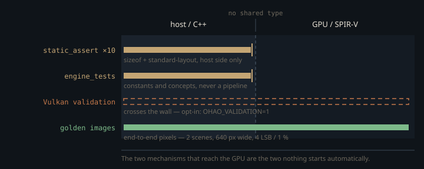

Monograph · Tree · ← Module hub · Cross-module invariants
architecture
Cross-module invariants
Contracts that break pixels silently if violated.
What a violation actually looks like
Nothing here segfaults when two modules disagree. The index buffer still has entries at the offset you computed, the material row still parses as three `vec4`s, the descriptor set still binds, the frame still presents. You get a picture — the wrong one, off by an amount that reads as a lighting decision. The module chapters explain each mechanism in isolation; the question none of them can answer is the cross-cutting one: *what would have caught this?*
Four things in the repository could, in principle. This page audits their reach.
The compile-time tier stops at the language boundary
`OHAO_ASSERT_GPU_LAYOUT(Type, Bytes)` is the engine's one *named* structural contract primitive. It pairs a `GpuPod` requirement — trivially copyable **and** standard layout, so that `memcpy` into mapped device memory is defined and the first member is guaranteed to sit at offset 0 — with a `sizeof` check against a canonical constant.
#Type " must be trivially copyable standard-layout for GPU"); \ohao/core/concepts.hpp:80Three call sites carry the macro, covering `LightData` (128 bytes), `PTPushConstants` (256) and `GPULight` (80). The same contract is asserted twelve more times without it: each of the four push-constant structs of `NrdCinematicPost`, which compiles only with NRD enabled, gets a bare `static_assert` on its byte size,
static_assert(sizeof(CompositePC) == 176, "CompositePC must be 176B");ohao/render/rt/denoise/nrd_cinematic.cpp:86the deferred pass structs (`ShadowPushConstant`, `CameraUBO`, `DrawPushConstant`) get one each, the `RenderScene` table rows (`InstanceGpu` 160, `MeshGpu` 16, the material `Pack` against `MaterialGpuPack::kBytes`) and `Vertex` (100) get one each, and `PBRMaterialParams` gets a `% 16 == 0` alignment assert beside its `GpuPod` check. Fifteen host-side size or alignment assertions, then — and all fifteen are assertions about C++ types, evaluated by the C++ compiler. No build step reflects the compiled SPIR-V. Set against the surface they guard — the path tracer alone declares a thirty-seven-entry descriptor set layout whose binding numbers run to 37, and the buffers behind those entries are re-declared independently in the raygen, closest-hit, any-hit and miss stages —
add(37, BUFFER, HIT); // instance material refsohao/render/rt/path_tracer_descriptors.cpp:90fifteen host-side checks are still a thin instrument. They catch *someone added a float to the struct*. They are blind to *someone reordered the GLSL block*, and blind by construction rather than by omission.
`engine_tests` sits in the same tier and inherits the same ceiling: its GPU-layout case is a handful of `static_assert`s and constant comparisons over `layout_meta.hpp`, checking hand-computed answers and never touching a pipeline.
The tier that does cross the wall is off by default
The Vulkan validation layers are the only mechanism in the stack that reads both sides: they compare the pipeline layout against the SPIR-V interface, check descriptor types and counts, and enforce the structural rules of descriptor indexing. Instance creation requests `VK_LAYER_KHRONOS_validation` only when an environment variable is set.
// Validation layers — enable with OHAO_VALIDATION=1 env var. Unset, empty or "0" isohao/gpu/vulkan/device_setup.cpp:37So the default for every example binary and every golden render is a run with no cross-language checking at all. Two things do turn it on. `check_validation.py` runs real scenes with the variable set and fails on any message, warning or error:
check-validation -- run real scenes under VK_LAYER_KHRONOS_validation and fail ontests/validation/check_validation.py:3and two `engine_tests` cases set it around `initialize()` and assert that a deferred resize — SSAO, TAA and bloom included — leaves the layer silent. A third route is `ohao_game` itself: `LiveHost::shutdown` returns the validation messages seen over the whole run including teardown, so a windowed run with the variable set exits nonzero on any report.
EXPECT_EQ(msgs.size(), size_t{0}, "the validation layer reports nothing across the resize");tests/engine/engine_tests.cpp:1374Both report clean. Since sub-project 2b step 5 the checker reaches past the raster path: its scene list is Cornell and the damaged helmet deferred, then the path tracer — Cornell offline, realtime, and realtime through NRD, and the helmet offline — each run through teardown.
SCENES = [tests/validation/check_validation.py:40Until then the path tracer ran under validation only when a person typed the command, and the layer reported the failure class this page is about. The path tracer's layout flagged binding 12 — the bindless texture table — as the variable-count binding while bindings up to 37 were declared behind it, and Vulkan permits the flag only on the highest-numbered binding (`VUID-VkDescriptorSetLayoutBindingFlagsCreateInfo-pBindingFlags-03004`). The binding is now partially bound and update-after-bind only:
// (VUID 03004), and every set is allocated at the full capacity anyway.ohao/render/rt/path_tracer_descriptors.cpp:67The error survived as long as it did because no automated run built this layout. Behind it stood five more the layer had never been allowed to see, all on the NRD path: a device extension NRI needed but nobody enabled, `synchronization2`, a descriptor pool reset while in use, images NRD samples created without `SAMPLED`, and single descriptor sets rewritten while an earlier frame read them.
The pixel tier is real and coarse
The golden corpus renders four scenes with the denoiser disabled, so what is pinned is raw deterministic beauty rather than a filter's output: the Cornell box and the damaged helmet, each once as an offline path trace and once through the deferred hybrid pipeline.
"command": "./build/cornell_box {out} 16 --denoise=none",tests/golden/manifest.json:54"command": "./build/cornell_box {out} 4 deferred --denoise=none",tests/golden/manifest.json:71Each is compared after downscaling to 640 px wide,
DOWNSCALE_WIDTH = 640 # compare at reduced res: averages the FP ghost away + tiny goldenstests/golden/render_golden.py:36against two thresholds that must **both** hold: a per-channel maximum and an allowance of differing pixels. The defaults are 4 LSB and 1 %, but no scene uses them any more: the deferred scenes are held to 0 and 0 (bit-exact run to run since sub-project 4 step 1), and the path-traced ones to 1 LSB and 0.05 % (since 2b step 5), their measured floor — the driver builds a mesh's BVH differently run to run, and an exact edge hit takes either triangle.
return s is not None and s["max_abs"] <= max_abs_diff and s["diff_frac"] <= max_diff_fractests/golden/render_golden.py:138The conjunction is stricter than the percentage suggests. `max_abs` is a single maximum over the whole frame, so a change that moves one compare-resolution channel past the limit fails regardless of how little area it touches. Sparseness alone saves nothing; only a change that is simultaneously sub-threshold in magnitude *and* sparse gets through.
Where the tier is genuinely coarse is resolution and coverage. The 1920→640 reduction is a bilinear resample, so a difference confined to a handful of full-resolution pixels is averaged against its neighbours before the maximum is taken. And the corpus is two scenes in two pipelines, with no denoiser output and no scene that exercises the ECS beyond spawning meshes and lights. The manifest's own comment concedes the shape of that problem, asking that every fixed bug add a scene so it cannot silently regress.
The 4-LSB tolerance is justified in the harness as absorbing a floating-point floor from non-associative GPU reduction order,
DEFAULT_MAX_ABS_DIFF = 4 # per-channel LSB at compare-res; absorbs the FP floor with margintests/golden/render_golden.py:34which is the standard argument, and the corpus no longer leans on it: where a floor was found, it was traced to its cause and either removed (the deferred races, the realtime path tracer's) or measured and named (the BVH), and the tolerance set to exactly that.
The two path-traced goldens are a hash of an unchanged sampler rather than a tolerance the image has slack inside — the manifest says so at length, and says why no sample count fixes it. See `systems/tests` for how a golden can go red for a reason that is not a renderer change, and what closes it.
And nothing starts any of them
The repository carries one CI workflow and it publishes this site. There is no build job, no golden run, no installed git hook. Since sub-project 4 every tier is one command away — `python tools/check.py` builds and runs every suite, harness and gate through CTest and answers with one JSON verdict — but `engine_tests`, `check_validation.py` and `render_golden.py` still run only when a person, or an agent, types that command.
The audit closes on an honest total, one line per mechanism. The asserts are the only tier that fires by itself, on every compile, and they stop at the language boundary. `engine_tests` inherits that same ceiling *and* has to be launched. The validation layers are the only thing in the stack that reads both sides; they are off unless an environment variable is set, and the script that sets it renders the raster path and the path tracer. The golden corpus is the only tier that judges a finished image, and it is coarse and manual.

What the unguarded contracts have in common
Two shapes account for nearly all of them.
**Slot joins.** The ray-tracing path no longer joins arrays by a running walk of the scene. Each TLAS instance's custom index is the instance's slot in the `RenderScene` table,
vi.instanceCustomIndex = slot & 0xFFFFFFu; // 24 bitsohao/render/scene/render_scene.cpp:117and the hit shaders use that single number to fetch the instance row, which names the mesh, its index range and its material refs.
InstanceGpu inst = instances[gl_InstanceCustomIndexEXT];shaders/rt/pt_closesthit.rchit:62That makes the instance key explicit — the same slot addresses the TLAS entry, the instance row and the draw list — but two positional joins survive underneath it. The per-triangle material slot is read at `triangleSlotOffset + gl_PrimitiveID`, so the slot stream must run parallel to the mesh's index order:
uint slot = triSlot[mesh.triangleSlotOffset + uint(gl_PrimitiveID)];shaders/rt/pt_closesthit.rchit:122and the slot indexes the instance's material refs, with anything past the ref count falling back to material 0 rather than failing:
((slot) < (inst).materialRefCount ? (refs)[(inst).materialRefOffset + (slot)] : 0u)shaders/includes/scene/scene_data.glsl:18Registration checks the first (a stream of the wrong length is logged and padded or truncated) and clamps the second to 64 refs per instance. Neither mismatch is visible in the picture except as a wrong material.
**Hand-copied constants.** The no-texture sentinel is the case. The producers use a named constant, `render::kNoTexture`, but there are now two more names for the same value:
static constexpr uint32_t kNoTexture = 0xFFFFFFFFu;ohao/gpu/layout_meta.hpp:37in the layout header, and `NO_TEXTURE` in `scene_data.glsl` — and neither has a caller. The shaders that test the value re-type `0xFFFFFFFFu` instead. The value is load-bearing in a dozen places and spelled four ways; two of the named constants are decoration.
Two ordering rules round out the set, and both are repaired in code rather than asserted. A new HDRI joins the one bindless texture table, so frames in flight must finish before it is registered:
// new HDRI joins the bindless table, so frames in flight must finish first.ohao/gpu/vulkan/renderer.cpp:270and the RT light buffer's 16-byte header — count, environment index, intensity scale — is rebuilt whole from the light table's own members on every upload, so the index and scale have to be held there, not written into the buffer:
const uint32_t header[4] = {static_cast<uint32_t>(m_rt.size()), m_envMapTexIdx,ohao/render/scene/light_table.cpp:226The per-triangle slot stream is positional on purpose and should not be "fixed". Giving each triangle a key — a mesh id or material handle stored beside the index — buys a second SSBO fetch in the closest-hit shader, on the hottest path in the engine, to defend against a class of bug that a human catches the first time they look at the render. The instance level already has its key (the slot); the triangle level does not need one. What the choice really costs is that the ordering contract lives in the registration check and in prose instead of in a type; the cheap way to buy it back is a debug-only comparison at registration, not a key column in the hot path.
Every invariant in this engine that spans the C++/GLSL boundary is enforced by a person reading two files. The compile-time asserts stop at the boundary, validation is opt-in, the golden corpus is coarse, and no automation starts any of them. Read every cross-module claim on these pages as something to re-verify against the code, not as something the build guarantees.
Contracts
- A mesh's triangle material-slot stream must hold exactly one entry per triangle, in index order. Registration logs a length mismatch and pads or truncates; the picture is the only other symptom. An instance holds at most 64 material refs, and a slot beyond its ref count resolves to material 0.
- The RT light buffer header (count, environment index, intensity scale) is rebuilt from the light table's members on every upload. Set the index and scale through `RenderScene::setEnvMapTextureIndex` and `setEnvIntensity`; writing the buffer directly is overwritten on the next upload.
- The variable-count flag on binding 12 of the path tracer's layout already violates the highest-binding rule, because bindings run to 37. Any fix moves the texture table to the highest-numbered binding and updates the `binding = 12` declarations in the shaders with it. Only the validation layer reports it, and only if `OHAO_VALIDATION` is set in the environment.
Source files
ohao/core/concepts.hppohao/render/rt/denoise/nrd_cinematic.cppohao/render/rt/path_tracer_descriptors.cppohao/gpu/vulkan/device_setup.cpptests/validation/check_validation.pytests/engine/engine_tests.cpptests/golden/manifest.jsontests/golden/render_golden.pyohao/render/scene/render_scene.cppshaders/rt/pt_closesthit.rchitshaders/includes/scene/scene_data.glslohao/gpu/layout_meta.hppohao/gpu/vulkan/renderer.cppohao/render/scene/light_table.cppParent hub for the full pipeline narrative; this page is the file-level design unit. Sitemap · hover glossary terms anywhere.